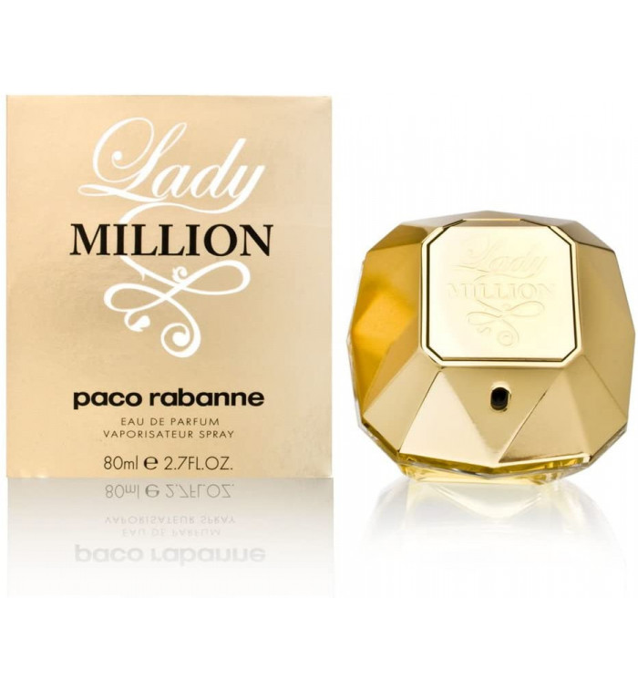

Lady Million - S/499
Lady Million de Paco Rabanne es una fragancia que encarna el glamour y la extravagancia femenina. Con una mezcla cautivadora de notas florales como el neroli, la azucena y el jazmín, combinadas con la calidez del pachulí y el ámbar, esta fragancia es una declaración de estilo y sofisticación. El frasco, diseñado para parecer un diamante dorado, refleja su opulencia y elegancia, convirtiéndolo en un objeto de deseo tanto.